楽歌の城攻め見聞録 第3話
宇都宮城を半日で歩く
— 戦うためではなく、将軍を泊めるための城
天守がありません。石垣もありません。土塁と堀だけの、こぢんまりしたお城です。
それでも宇都宮城は関東七名城に数えられています。しかも徳川幕府にとっては、なくてはならない城でした。
なぜか。このお城は、戦うための城ではなかったからです。
将軍が日光へお参りに行く道中、必ずここに泊まる。そのための城でした。城の格を決めていたのは堅牢さでも兵力でもなく、誰を迎える場所かだったんですね。その話をしに、宇都宮まで行ってきました。
……ちなみに、宇都宮駅からお城までは自転車で10分かからない距離です。私は30分かかりました。 その話も正直に書きます。
この記事でわかること読了 約10分
- 天守も石垣もない宇都宮城が、なぜ名城と呼ばれるのか
- 宇都宮駅から城址公園へのアクセスと、清明台の2階に上がれる日
- ライトレールで行けるお城
今回まわった順番
| 順 | 場所 | 移動 |
|---|---|---|
| 1 | 宮サイクルステーション（宇都宮駅西口） | クロスバイクを借りる |
| 2 | 宇都宮城址公園 | 自転車 |
| 3 | 宇都宮二荒山神社 | 自転車 |
| 4 | 来らっせ 本店（馬場通り） | 徒歩すぐ |
| 5 | 芳賀・宇都宮ライトレール（宇都宮駅東口） | 自転車を返して乗車 |
二荒山神社と来らっせは、どちらも馬場通り。 神社の石段を下りてすぐのところに餃子があります。この並びがかなり効率的でした。
清明台の2階に上がりたい人は、第3日曜に行きましょう
宇都宮城址公園の櫓の2階に上がれるのは、毎月第3日曜日の11:00〜14:00だけ（雨天中止）です。しかも12月と1月は富士見櫓に変わり、時間も8:00〜11:00になります。それ以外の日は、1階と外観の見学になります。
宇都宮城って、どんなお城？
築いたのは藤原秀郷（ふじわらの ひでさと）とも、藤原宗円（そうえん）とも言われています。平安時代の後期、11世紀あたりの話で、正直なところ確かなことは分かっていません。
はっきりしているのは、そのあとです。宇都宮氏がここを本拠地に、およそ500年。 鎌倉、南北朝、戦国と代替わりを続けながら、この場所を手放しませんでした。最後は豊臣秀吉に滅ぼされます。
500年ってなかなかの長さです。関東の武士の家で、同じ場所に500年いられたというのは、それだけでこの土地が手放せない場所だったことの証明になります。
江戸時代、この城は「宿」になりました
ここからがこのお城の本番です。
徳川家康は日光東照宮に祀られています。歴代の将軍はそこへお参りに行くわけですが、これを日光社参（にっこうしゃさん）といいます。そして、その行き帰りに泊まるのが宇都宮城でした。
この行列が、規模からしておかしい。
| 享保13年（1728） | 8代将軍 吉宗の社参 — 随行 約13万3千人 |
| 天保14年（1843） | 12代将軍 家慶の社参 — 大名26家を連れて 14万〜15万人 |
街がひとつ、まるごと動いてくるようなものです。当然お城には収まりません。将軍が城に泊まって、残りは城下に溢れました。
つまり宇都宮城は、その行列を迎えるための設備として整えられていったわけですね。戦うための城ではなく、滞在するための城。天守も石垣もないのは、必要なかったからです。
ちなみに城下町の骨格をつくったのは、このあと出てくる本多正純（ほんだ まさずみ）。城と城下町を大改造した人で、いまの宇都宮の中心市街地の形は、このときに決まったと宇都宮市は説明しています。
① 宇都宮駅から城址公園へ — 自転車が正解です
このお城、アクセスがとにかく楽です。宇都宮駅から宇都宮城址公園まで、およそ2km弱。 歩くと30分近くかかりますが、自転車なら10分とかかりません。
というわけで、駅西口の宮サイクルステーションでクロスバイクを借りました。市が関わっている施設で、朝7時から開いています。借りるときにお店の方が「大通りに出たら右折して、案内看板どおりに行けば着きますよ」と、とても正確な道案内までしてくださいました。
正直に書きます — 30分かかりました
その正確な案内をいただいておきながら、見事に迷いました。
まず日光方面へ向かってしまい、「日光はなんか違くない？」と気づいて引き返す。次に競輪場らしき場所に出て、「競輪場なんてルートにあったっけ？」と引き返す。ようやく市街地に戻り、「この先が宇都宮城」の看板を見つけて喜んだ直後、最後の曲がり方を間違えて栃木県庁に到着。
10分で着くはずの道を30分。いい運動になりました。帰りは10分で着いています。 道そのものは、まったく難しくありません。
自転車以外なら、JR宇都宮駅からバスで約15分。車の場合は城址公園の駐車場が9台しかないので、満車のときの代替を先に調べておくと安心です。
DATA — 宮サイクルステーション
- 住所
- 栃木県宇都宮市川向町1-48（市営JR宇都宮西口自転車駐車場の西側）
- 電話
- 028-627-3196
- 営業
- 7:00〜20:00
- 休み
- 12月29日〜1月3日
- 料金
- スポーツバイク 4時間510円 ／ 1日1,030円
※ 宇都宮市公式サイトの情報です。お出かけ前に最新情報をご確認ください。
② 宇都宮城址公園 — 土塁と堀と、2007年の復元
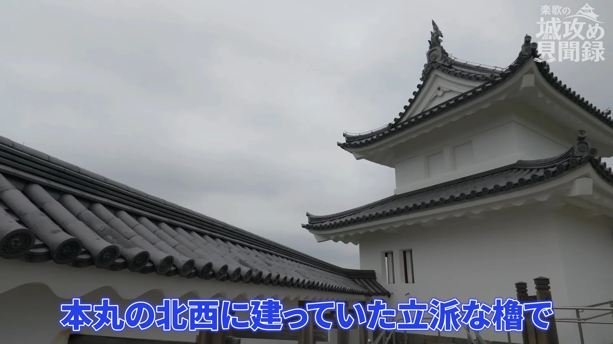
着いてまず目に入るのが、白い塀をのせた長い土塁です。
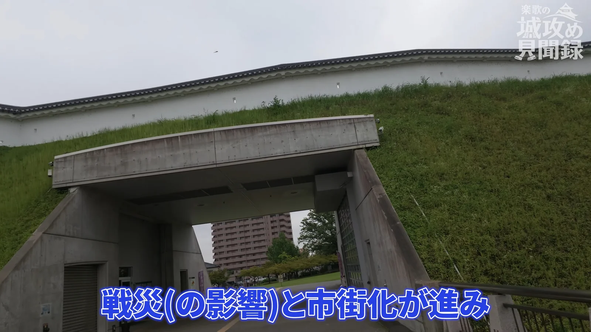
そして、ここは最初に書いておきます。いま見えている土塁も堀も櫓も、すべて復元です。 戦災と市街化が進んで、城の形はほとんど失われていました。現在の宇都宮城址公園が完成したのは平成19年（2007年）です。
ただ、復元といっても規模がなかなかです。
| 土塁 | 高さ 約10m ／ 幅 約20m ／ 延長 約230m |
| 堀 | 幅 約11m〜26m |
| 清明台 | 本丸の北西に建つ櫓。木造2層・本瓦葺、高さ 約10m |
| 富士見櫓 | 本丸の南西に建つ櫓。木造2層、高さ 約10m。1階のみ内部見学可 |
石垣の城を見慣れていると拍子抜けするかもしれませんが、関東の城は、石がなければ土で守るというのが流儀です。宇都宮城もそちら側。ただの土手ではなく、人が盛って、固めて、削り出した壁です。
清明台 — 2階に上がれる日は決まっています
本丸の北西に建つ櫓です。中は一部屋だけですが、先に書いたとおり、このお城の格は建物の大きさでは測れません。
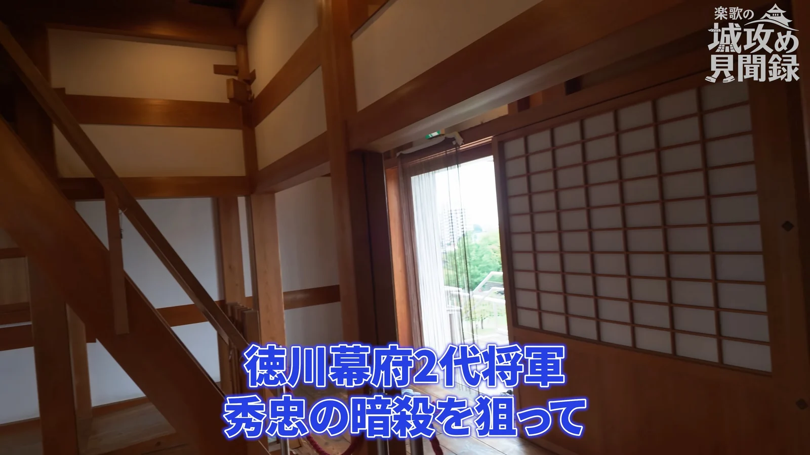
内部で見上げてほしいのが、小屋組です。太い梁が斜めに噛み合っていて、復元とはいえ木造の気持ちよさがちゃんとあります。
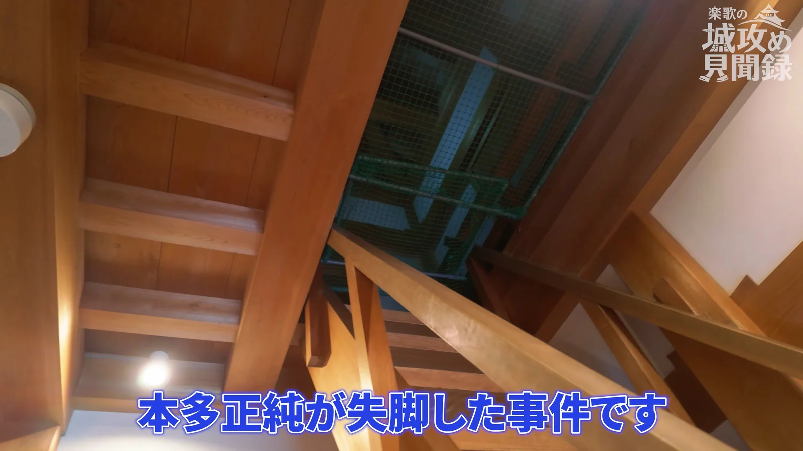
そして2階に上がれるのは毎月第3日曜日の11:00〜14:00だけ。 私が行ったのは第1日曜の、しかも朝イチでしたので、どちらにせよ上がれませんでした。これから行く方は、ぜひ日曜を合わせてみてください。
釣天井事件 — 仕掛けは、見つかっていません
歴史メモ — 宇都宮城釣天井事件
元和8年（1622年）、城主は本多正純。徳川家康の側近中の側近です。2代将軍・秀忠が日光からの帰りにこの城へ泊まる ── その寝所の天井に、落として圧死させる仕掛けが仕込まれていた。そして秀忠は予定を変えて宇都宮に泊まらず、その後まもなく正純は失脚した。
……という、たいへん有名な話なのですが。これを裏付ける確かな史料は見つかっていません。
宇都宮市教育委員会はこの話を民話として紹介し、秀忠が宿泊予定を変えたことと正純の失脚が結びついて「作られたといわれています」と説明しています。百科事典のほうも、後からできた巷説という扱いです。正純が改易されたこと自体は事実ですが、理由は別にあったとされています。
仕掛けはなかった。でも話は400年残った。城って、建物より噂のほうが長生きすることがあるんですよね。
戊辰戦争 — 建物の大半は、このとき焼けました
慶応4年（1868年）。
4月19日、旧幕府軍が下河原門を破ってこの城を奪います。 そしてその4日後、新政府軍が奪い返しました。 このとき新選組が陣を敷いていたのが、城の北にある高台 ── このあと行く二荒山神社です。
そして、宇都宮城の建物の大半は、このとき失われました。いま立っている城址公園は、それから約140年後、2007年に戻ってきた姿ということになります。
実はこの土塁の内部に、宇都宮城ものしり館という展示室があります。復元された宇都宮城の姿を、映像や模型で紹介しているスペースです。ここを見てから土塁を歩き直すと、見え方がはっきり変わります。
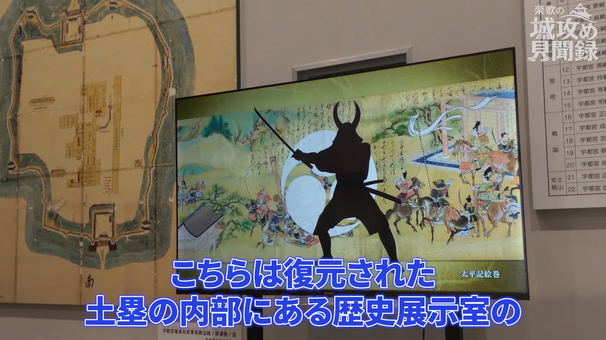
映像では、かつての宇都宮城の姿がCGで再現されます。本丸には櫓が5つ ── 清明台、富士見櫓、北櫓、東櫓、辰巳櫓。いま建っているのはこのうち清明台と富士見櫓の2つで、残りは絵と映像のなかにしかありません。
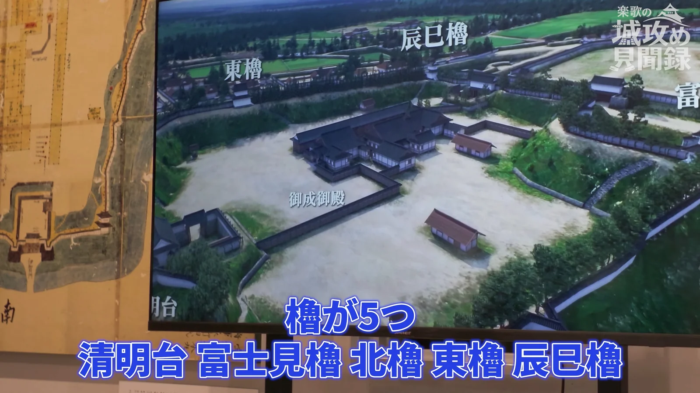
DATA — 宇都宮城址公園
- 住所
- 〒320-0817 栃木県宇都宮市本丸町1-15
- 開園
- 24時間開放（歴史建築物・清明館は 9:00〜19:00）
- 休み
- 清明館は年末年始休館
- 料金
- 入園・入館ともに無料
- 土塁内の展示
- 宇都宮城ものしり館（復元模型・映像など）
- 櫓2階の
特別開放 - 毎月第3日曜 11:00〜14:00（雨天中止）／12月・1月は富士見櫓で 8:00〜11:00
- 駐車場
- 9台・無料
- アクセス
- JR宇都宮駅からバスで約15分 ／ 自転車で約10分（約2km弱）
- 問い合わせ
- 028-632-2595（公園管理課）
※ 宇都宮市・宇都宮観光ナビの情報です。お出かけ前に最新情報をご確認ください。
③ 宇都宮二荒山神社 — 「宇都宮」の名前は、ここから
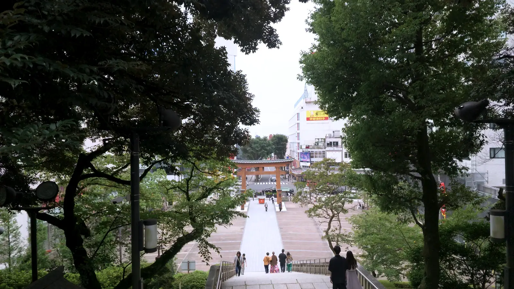
城から自転車ですぐ、繁華街のまんなかに、びっくりするような石段があります。下野国（しもつけのくに）の一之宮、宇都宮二荒山神社です。
ご祭神は豊城入彦命（とよきいりひこのみこと）。相殿に大物主命と事代主命。現在地の臼ケ峰に遷座したのが承和5年（838年）と伝わります。延長5年（927年）の『延喜式』神名帳にも名前が載っている、たいへん古いお社です。
そして、ここが面白いところ。
「宇都宮」という地名は、この神社から来ているという説があります。 一之宮（いちのみや）が訛って、うつのみや。地名の由来には他にも説がありますが、この神社から来ているという点では、どの説もおおむね一致しているそうです。
さらに、神社に神領と宝物を寄進し、社殿を改築したのが藤原秀郷。平将門の乱の、あの秀郷です。そして冒頭に出てきたとおり、宇都宮城を築いたとも言われている人物でもあります。
神社が先にあって、その門前に町ができて、城はそのあと。順番が、思っているのと逆なんですね。
現地で聞いた話 — この石段から、城が見えた
自転車を借りた宮サイクルステーションの店員さんから伺った話です。
いまは石段のまわりに木が育って見通せませんが、昔はこの石段から見下ろす正面に、宇都宮城がはっきり見える立地だったとのこと。当然、城側からもこの高台は見通せます。
だから戊辰戦争のとき、この高台を取った側と城側のあいだで、最新鋭の野戦砲による砲撃の応酬があったと伝えられているのだそうです。……この近所に住んでいたら、頭の上を砲弾が飛び交っていくわけで、生きた心地がしなかっただろうなと思います。
※ こちらは現地で伺ったお話で、裏づけとなる史料までは確認できていません。
DATA — 宇都宮二荒山神社
- 住所
- 〒320-0026 栃木県宇都宮市馬場通り1-1-1
- 電話
- 028-622-5271
- 格式
- 下野国一之宮
- ご祭神
- 豊城入彦命（相殿：大物主命・事代主命）
- 注意
- 境内での撮影には神社のきまりがあります。公式サイトの「境内での撮影について」を必ずご確認ください
※ 神社公式サイトの情報です。お出かけ前に最新情報をご確認ください。
④ 来らっせ 本店 — 有名店が一か所に集まっています
石段を下りて、すぐ。お昼です。
来らっせ（きらっせ）は、宇都宮市内の有名餃子店が一か所に集まっている施設です。MEGAドン・キホーテ ラパーク宇都宮の地下1階。好きなお店を選んで注文すると番号札をもらえて、座っている席まで届けてくれます。
宇都宮の餃子店は市内に300軒以上あるといわれていて、宇都宮餃子会に加盟しているお店だけでも145店舗あるそうです。全部回るのは無理なので、こういう施設はありがたい。
待ち時間のはなし
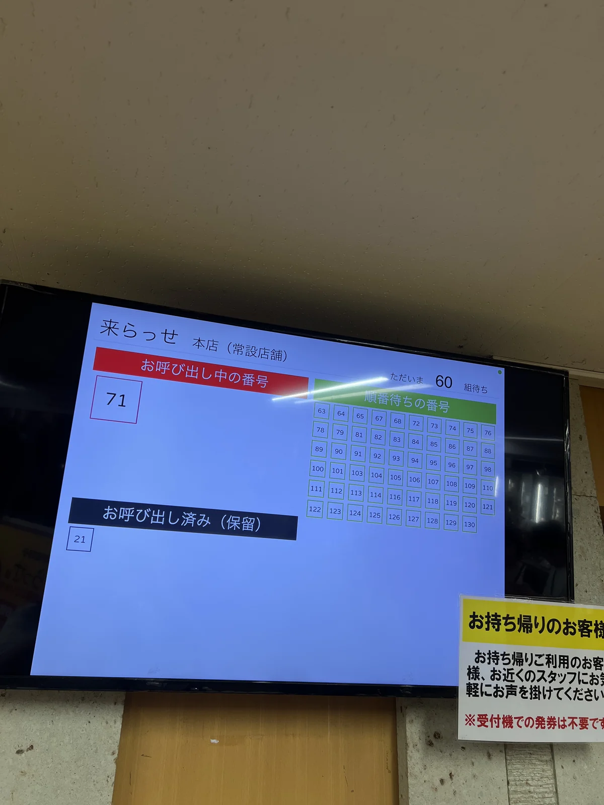
開店に合わせて行ったのですが、整理券は71番目。 そこそこ覚悟しましたが、実際に待ったのは30分ほどで入れました。回転はかなり速いようです。
店内は相当な混雑で、待っている方も多かったので、動画の撮影は遠慮して写真だけにしています。混む時間帯に長居しない、というのはこういうお店の最低限のマナーかなと思います。
食べたのは3店
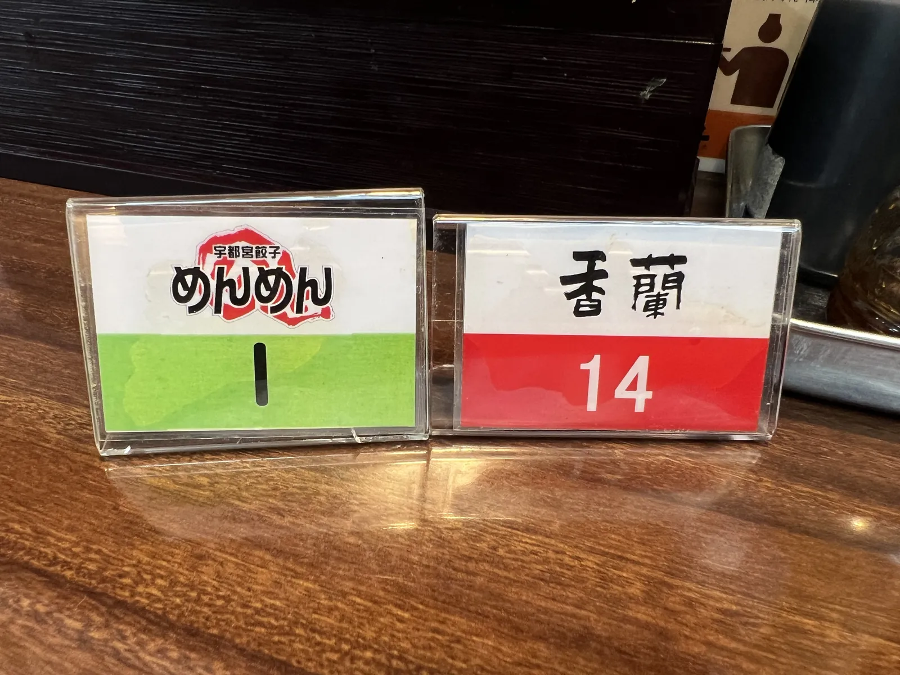
常設の5店（みんみん・めんめん・香蘭・龍門・さつき）から、香蘭、めんめん、みんみんの3つをいただきました。
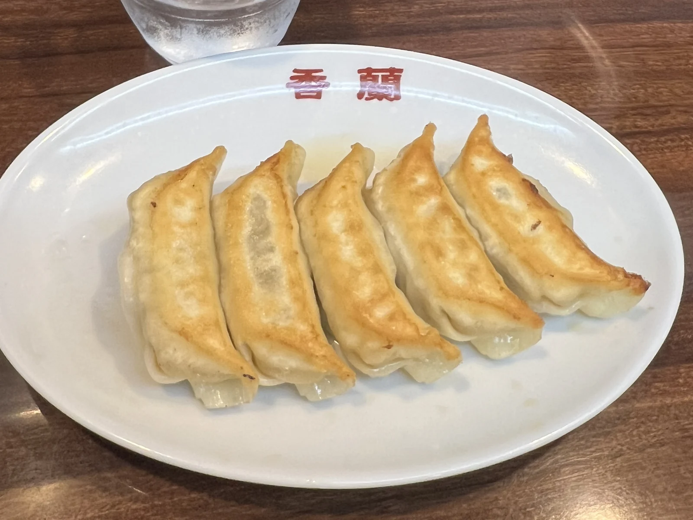
香蘭はジューシーで、餡の肉感がとにかくすごい。肉まんとはまた違うんですが、「肉を食べているぞ」という満足感がはっきりあります。
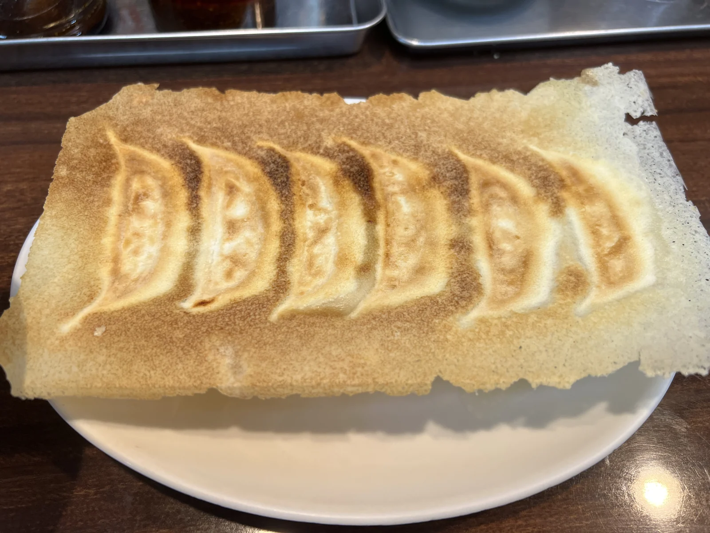
めんめんは、見てのとおりの超・羽根つき。宇都宮では珍しいのではないでしょうか。見た目のインパクトに反して、中の餡はけっこうさっぱりしていて食べやすいです。
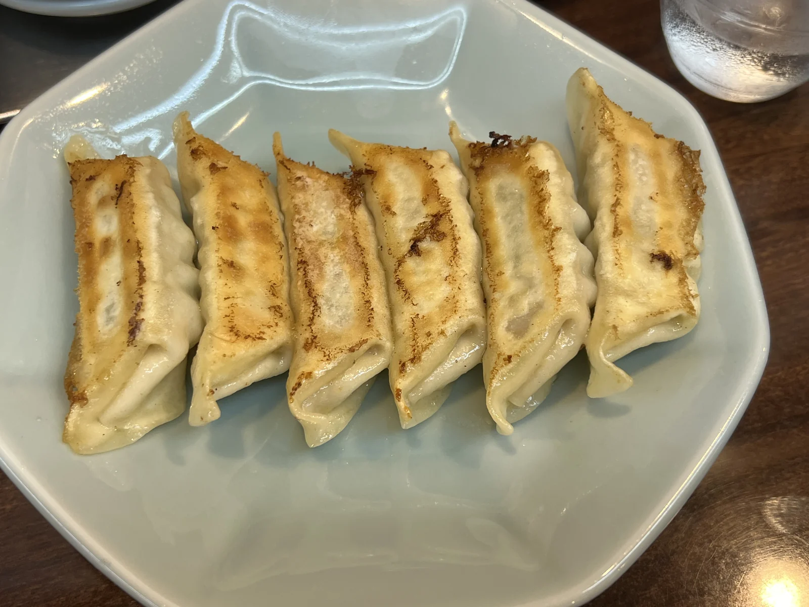
そしてみんみん。おそらく宇都宮でいちばん有名なお店ですが、私、実は食べるのが初めてでした。
……伊達じゃないな、と思いました。全体的に高いレベルでまとまっていて、安定感がすごい。「みんなが頭に思い浮かべる餃子」が、そのまま出てくる感じです。香蘭とめんめんで2人前食べたあとなのに、ぺろっといけました。
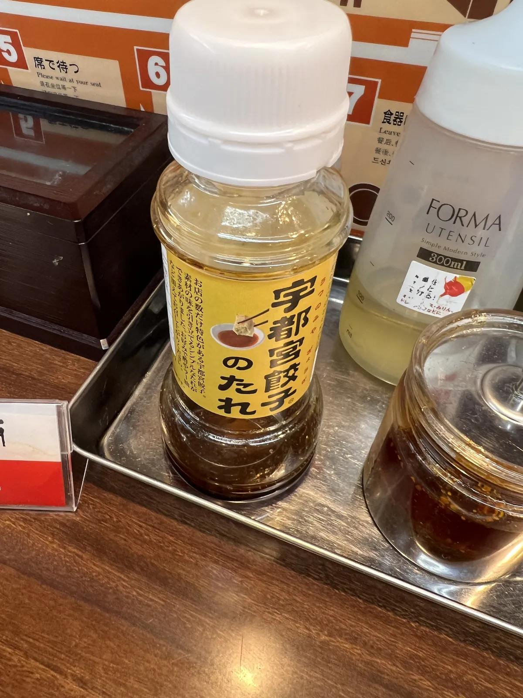
DATA — 来らっせ 本店
- 住所
- 栃木県宇都宮市馬場通り2-3-12 MEGAドン・キホーテ ラパーク宇都宮 地下1階
- 営業
- 常設店舗：平日 11:00〜20:30（L.O.20:00）／土日祝 11:00〜21:00（L.O.20:30）
日替わり店舗：11:00〜21:00（L.O.20:30）／お土産コーナー：10:00〜21:00 - 定休
- 年中無休
- 常設店舗
- みんみん・めんめん・香蘭・龍門・さつき（150席）
- 日替わり
- 曜日によって登場する店が変わり、餃子は全27種類（75席）
- 支払い
- 常設店舗はクレジットカード不可（日替わり店舗は可）。電子マネーは全店対応
- 駐車場
- 提携駐車場またはコインパーキング
※ 宇都宮餃子会公式サイトの情報です。お出かけ前に最新情報をご確認ください。
⑤ 芳賀・宇都宮ライトレール — 城とは関係なく、乗りたかった
正直に言います。城攻め見聞録とまったく関係ありません。乗りたかっただけです。
芳賀・宇都宮LRT（ライトライン）は、2023年8月26日に開業した路面電車です。宇都宮駅東口から芳賀・高根沢工業団地までを結んでいます。路面電車の完全新線としては国内で75年ぶり、という代物。これは乗ります。
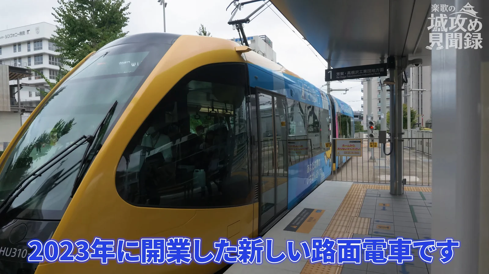
とはいえ、お城の番組です。理由づけが要る。
……調べたら、ありました。宇都宮駅東口から19分ほどのところに「飛山城跡（とびやまじょうあと）」という電停があるのです。
飛山城 — 宇都宮氏を支えた、もうひとつの城
飛山城は芳賀氏のお城です。芳賀氏は益子氏とともに「紀清両党（きせいりょうとう）」と呼ばれた、宇都宮氏の有力な武士団。つまり宇都宮城を支える側の城だったわけですね。
宇都宮氏が500年もこの地にいられたのは、本拠地が堅かったからというより、こういう城が周りを固めていたからです。本城だけ見ていても、500年の説明にはならない。
鎌倉時代後期に芳賀氏が丘陵に築き、慶長2年（1597年）に豊臣秀吉の命で廃城になるまで約300年。いまは約14ヘクタールの国指定史跡「飛山城跡」として整備され、木橋や掘立柱建物・竪穴建物が復元されています。
電停から城までは、歩きます
そして私はここで引き返しました。「飛山城跡」電停から飛山城史跡公園までは、調べたら歩いて片道30分ほど。 電停と城を結ぶ公共交通機関がありません。
……電停の名前にしないでもらえませんかね、というのが正直な感想です。行かれる方は往復1時間ほどの徒歩を見込んでおいてください。 私はいつか、ちゃんと行きます。
DATA — 芳賀・宇都宮ライトレール／飛山城跡
- 路線
- 芳賀・宇都宮LRT「ライトライン」宇都宮駅東口 〜 芳賀・高根沢工業団地
- 開業
- 2023年8月26日
- 運賃
- 宇都宮駅東口 → 飛山城跡：250円（小児130円）
- 所要
- 約19分 ／ 運行はおおむね12分間隔
- 飛山城跡
- 〒321-3236 栃木県宇都宮市竹下町380-1（電停から徒歩30分ほど。公式サイトの案内では約20分）
※ 宇都宮ライトレール・飛山城史跡公園の情報です。お出かけ前に最新情報をご確認ください。
このルートを楽しむコツ
- 自転車を借りる。 駅から城址公園まで約2km弱。バスもありますが、城・神社・来らっせが自転車でひとつながりになるのが大きいです。宮サイクルステーションは朝7時から開いています。
- 第3日曜に行けると、櫓の2階に上がれます。 11:00〜14:00、雨天中止。12月・1月は富士見櫓で8:00〜11:00に変わります。
- 土塁の中の「宇都宮城ものしり館」を先に見る。 復元された城の姿を頭に入れてから土塁を歩くと、同じ景色の密度が変わります。
- 来らっせの常設店舗はクレジットカード不可。 現金か電子マネーを用意しておきましょう。混み具合は日によって違いますが、私が行った日は開店直後で71番目、入れたのは30分後でした。
おわりに
一日歩いて、いちばん覚えておきたいと思ったのは、やはりここでした。
宇都宮城は、戦うためのお城ではなかった。
天守がない。石垣もない。土塁と堀だけの、質素で小さな城です。城としてのスペックだけ並べたら、正直、地味です。
でも、徳川幕府にとってこの城は外せなかった。将軍が日光へ向かうとき、必ずここに泊まるという伝統があったからです。
名城というのは、ふつう、その城の堅牢さや戦力で決まります。宇都宮城は違います。幕府の祖である東照大権現を祀る日光東照宮のお膝元にあり、その時その時の天下人をもてなす。 それこそが、このお城を唯一無二の名城にしたのだと思います。
川越城は霧に隠れる城でした。忍城は水に浮く城でした。そして宇都宮城は、通り道に立ち続けて、来る人を迎えた城です。
関東七名城、これで3つ目。次回は群馬県の前橋城へ向かいます。暴れ川として名高い利根川にさんざん悩まされ、あげく利根川のせいで一度は捨てられてしまった、たいへん不憫なお城です。どうぞお楽しみに。